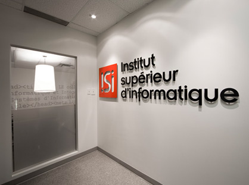

Accueil
Login Etudiant
Formation
Notre Institut
Nous Joindre
A propos du site :
Ce site est destiné aux étudiants de l’Institut Supérieure d'Informatique (ISI-MTL), et plus précisément aux nouveaux , pour les aider à mieux s’adapter à leurs formations, en leurs proposant des cours, des sujets d’examens, ainsi que des applications dont ils auront besoins pour leurs travaux pratiques durant leurs cursus.Il est aussi destiné aux étudiants des différentes fomations offertes, pour les quels on a essayé de regrouper différents documents et logiciels qui les aideront à bien réaliser et développer leurs projets . A travers ce site, nous aspirons à nous ouvrir aux autres écoles et instituts, en publiant des cours et des sujets d’examens des différentes modules qui y sont enseignés, Ainsi , nous espérons contribuer à ce que le plus grand nombre possible d’étudiants puissent profiter de nos différents sujets , programmes et documents , et à ce que nos connaissances soient partagées,Pour cela nous appelons nos camarades et amis étudiants à participer à l’enrichissement de ce site en y publiant leurs différents articles et suggestions.
